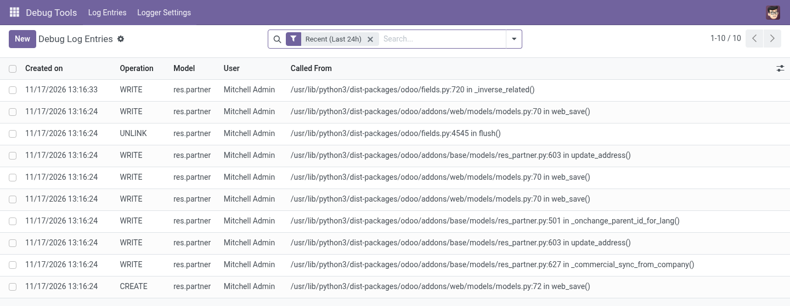
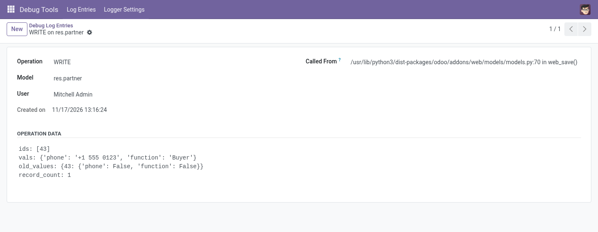
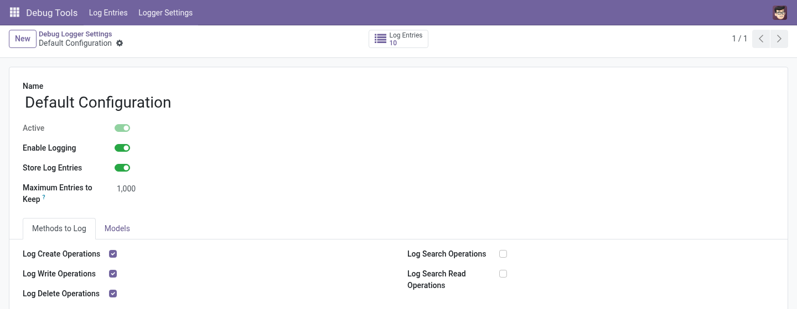

See every create, write and delete Odoo runs: which records, what changed, who did it and which line of code made the call.
Odoo 17.0 Community & Enterprise Free · LGPL-3

Log Entries: one line per call, with the user and the file, line and method that made it.
Every call on every model, and search or search_read when you switch them on.
File, line and method of the code that made the call, not Odoo's own wrappers.
A write keeps the old values next to the new ones; a delete keeps the record names.
Log all models, or only the few you are chasing a bug in.
Passwords, tokens and API keys show as ***; long values such as file contents are cut short.
Always in the server log; optionally stored as entries, oldest deleted past a limit you set.

One entry: the values written and what they were before.

Logger Settings: switch logging on and choose the operations and models.
Free and open source (LGPL-3) by Paulius Gaizauskas · Questions or bugs: GitHub issues